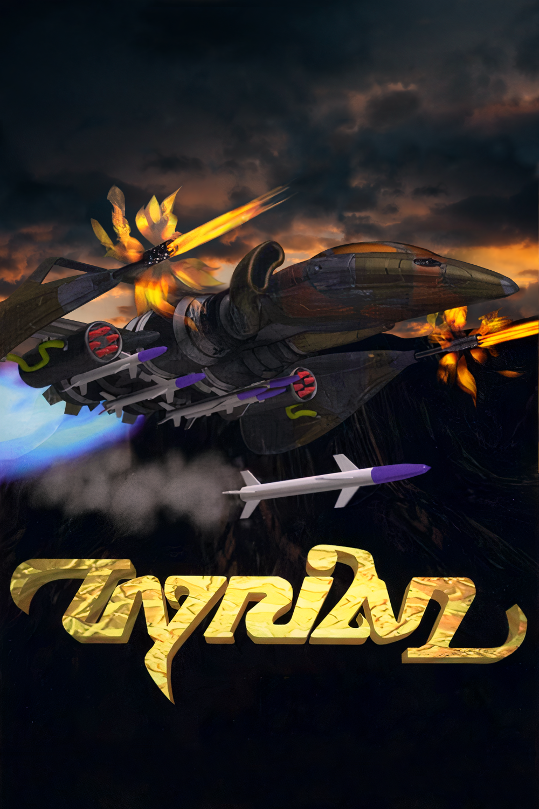
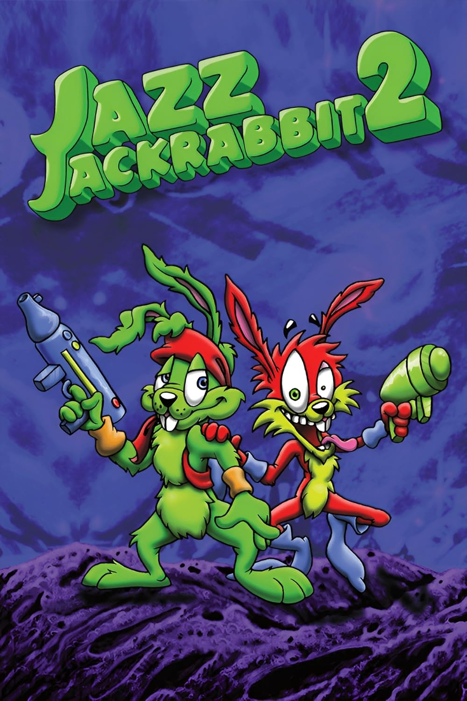
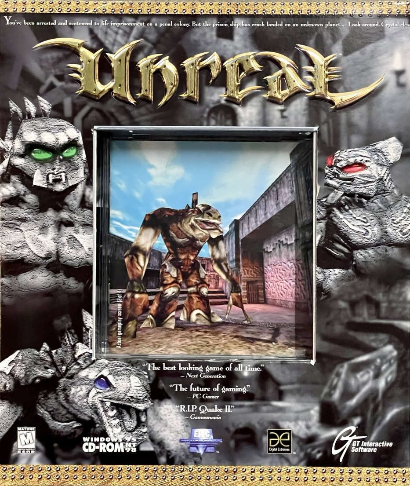

Alexander Museum
Mind the cursed artifacts and enjoy your stay!

Mind the cursed artifacts and enjoy your stay!
Timeline

Before the tracker aliases and game credits, there were already childhood-era AdLib experiments.
This card marks the earliest starting point in the museum: music made at home before the scene years, before modules, and before the work that would later break out into public view.

This is the old-fashioned way in: tracker culture, aliases, and the roots of game music.
I came up the old-fashioned way through the tracker scene, and this is where I would want people to start. Follow the aliases, open the scene links, and enjoy the sample-based world that shaped everything that came after.
"I think it is very important to understand game music's roots."
OC ReMix Interview
This is where the scene years turn into a game people can still enjoy today.
This is one of the clearest places to hear those scene instincts turning into a full game soundtrack. If you are new to this part of the story, this is a good place to play, listen, and follow the world outward from here.
"Tyrian", the shooter Jason and I came up with, fast became an Epic title.
UnrealSP Interview
A bright, fast platformer stop that shows the Epic years were not just shooters.
This card works as the playful side of the museum's Epic chapter: colorful, kinetic, and still deeply tied to tracker-era composition. It also gives readers a cleaner bridge from Tyrian into the broader Epic run.
"My friend Jason Emery first played the Metroid theme over the phone to me saying 'wow, cool, 5 voices, listen to this...' and the rest is history."
VGMO Interview
One of those rare moments where the music-first approach just worked.
Unreal felt like one of those rare projects where I could just write music and it magically went in. I want this card to invite people into the full atmosphere, where the mood, world, and score all seem to lock together at once.
"I pretty much wrote anything I wanted. Cliff would describe the situation and I'd play early builds and the music was written based on inspiration alone."
UnrealSP Interview
The multiplayer breakout where the score became part of the game's identity for an entire generation.
This exhibit earns its own stop because it is not just another Unreal release. It is a culture-maker: the maps, the pace, and the music all became shorthand for a whole era of competitive PC play.

The same instinctive approach, but with more of the world already in view.
Deus Ex followed some of that same tradition, but with a clearer sense of place, locale, and story beforehand. This is a good place to notice how the music starts locking to the world more deliberately, and how that opens into everything beyond this early era.
"My favorite was probably Deus Ex overall... it remains one of the top games ever released, so it is my current crown jewel."
VGMO InterviewFormat Notes
From here, we can just keep adding exhibits in the same pattern: image, date, title, context, metadata, and links. That makes the page easier to scan, easier to maintain, and much easier to iterate on than having separate exhibit cards plus a separate timeline summary.